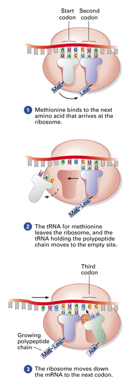

|
|
|
|
|
Objectives
Key Terms
You have just learned how genetic information flows from DNA to RNA to protein. A sequence of DNA base triplets is transcribed into RNA codons, which are translated into a sequence of amino acids that form a polypeptide. In this section, you will learn the details of the mechanisms of transcription and translation. Transcription: DNA to RNA
The base-pairing during transcription is the same as when DNA replicates, except that RNA has uracil instead of thymine: the base U in RNA pairs with A in DNA. A transcription enzyme called RNA polymerase links the RNA nucleotides together. In the transcription of a gene, specific sequences of DNA nucleotides tell the RNA polymerase where to begin and end the transcribing process. Editing the RNA Message The initial RNA transcripts have stretches of noncoding nucleotides that interrupt nucleotide sequences that actually code for amino acids. It is as if nonsense groups of letters were randomly scattered in an otherwise normal document. Such internal noncoding regions are called introns, and are found in most plant and animal genes. (Many researchers are now trying to determine the functions of introns and how they evolved.) The coding regions of the RNA transcript—the parts of a gene that remain in the mRNA and will be translated, or "expressed"—are called exons. Before the RNA leaves the nucleus, the introns are removed and the exons are joined together, producing an mRNA molecule with a continuous coding sequence (Figure 11-15). This process is called RNA splicing. With splicing completed, the "final draft" of eukaryotic mRNA is ready for translation.
Translation: RNA to Protein The Players Translating one language into another language requires an interpreter. Some person or device must recognize the words of one language and convert them into the other. For the cell, that interpreter is transfer RNA. Transfer RNA (tRNA) translates the three-letter codons of mRNA to the amino acids that make up proteins (Figure 11-16).
To perform this task, a tRNA molecule must (1) become bound to the appropriate amino acid and (2) recognize the appropriate codon in the mRNA. The unique structure of tRNA molecules enables them to perform both functions. There is a different version of tRNA molecule that matches each codon. At one end of the folded tRNA molecule is a specific triplet of bases called an anticodon. The three bases of the anticodon are complementary to a specific codon in the mRNA. During translation, the anticodon on tRNA recognizes a particular codon on mRNA by using base-pairing rules. At the other end of the tRNA molecule is a site where a particular amino acid can attach. An enzyme specific for each amino acid recognizes both a tRNA and its amino acid partner and links the two together, using energy from ATP. The ribosome, an organelle to which you were introduced in Chapter 6, coordinates the functioning of mRNA and tRNA. The ribosome consists of two parts or subunits, each of which is made up of proteins and a considerable amount of yet another kind of RNA, ribosomal RNA (rRNA). A complete ribosome has a binding site for mRNA on its small subunit and two binding sites for tRNA on its large subunit (Figure 11-17). The subunits of the ribosome act like a vise, holding the mRNA and tRNA molecules close together.
One of the tRNA-binding sites, the "P" site, holds the tRNA carrying the growing polypeptide chain. The other site, the "A" site, holds a tRNA carrying the next amino acid to be added to the chain. (An easy way to remember which site is which is that "P" stands for "polypeptide" while "A" stands for "amino acid.") The ribosome connects the newly arrived amino acid to the growing polypeptide chain. The Process The first step in translation brings together all the pieces needed during translation: the mRNA, the first tRNA with its attached amino acid, and the two subunits of a ribosome. The start codon AUG dictates where translation will begin, as shown in Figure 11-17. Next, amino acids are added one by one to the growing chain of amino acids. Each addition occurs in a three-step process (Figure 11-18). This lengthening process continues until the ribosome reaches a stop codon—UAA, UAG, or UGA. Remember that the three stop codons do not code for amino acids. When a new amino acid fails to arrive at the "A" site, the translation stops. The completed polypeptide, which is typically several hundred amino acids long, is set free by hydrolysis from the tRNA. A single ribosome can make an average-sized polypeptide in less than a minute. The whole process of translation is summarized in Figure 11-19.  Figure 11-18During translation, the ribosome adds amino acids to the polypeptide chain. The ribosome moves down the transcript, codon by codon, until translation is completed.
Review of Protein Synthesis
Concept Check 11.5
|